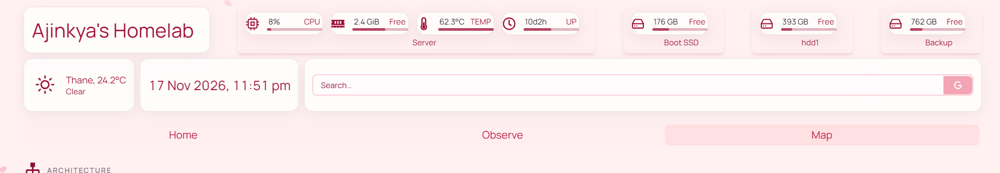
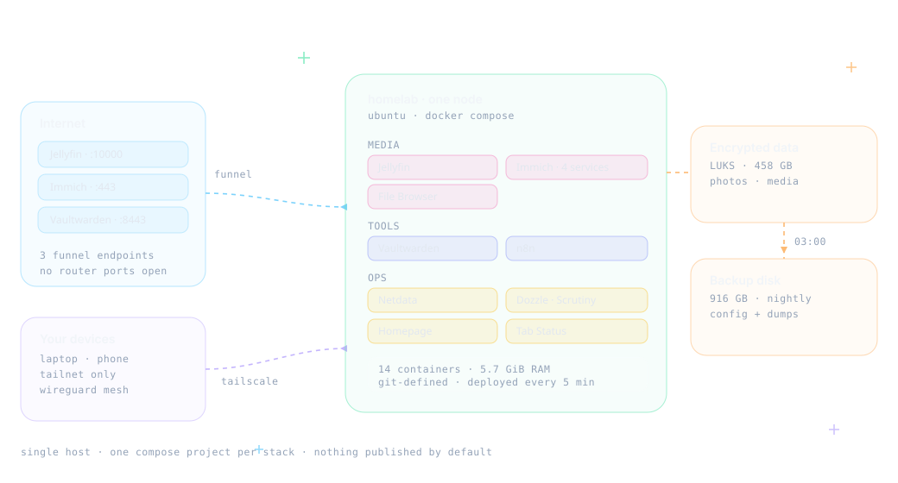

Self-hosted infrastructure · single node
Fourteen containers, an encrypted data volume and a git-defined configuration. Photos, media, files, secrets and telemetry — all private, all reproducible, deployed by a timer that validates before it touches anything.
uptime 10d · 14/14 containers healthy · last deploy: automated

Platform
Each layer has one job, one config file and one way to be deployed.
Jellyfin for films and music, Immich (server + ML + Postgres + Redis) for a 50 GiB photo library, File Browser over the encrypted disk.
Netdata metrics, Dozzle logs, Scrutiny SMART health and a status endpoint — the dashboard reads all four live.
Vaultwarden behind an authenticated endpoint; every service gets its own credentials, nothing is reused or stored in git.
n8n workflows, nightly snapshots and a morning digest. Failures dedupe into a single alert instead of a mailstorm.
LUKS-encrypted volume for live data, a separate backup disk, and SMART thresholds that fire before a drive dies.
No router port-forwards. WireGuard mesh for devices, three explicit Funnel endpoints for the internet, private bridges for databases.
Pipeline
Every change takes the same four steps. Nothing is edited by hand on a running container.
Compose file or stack config lives in git, next to the code that runs it.
CI resolves every compose file, lints deploy scripts and scans for secrets.
A 5-minute timer pulls, re-checks and recreates only the stacks whose hash changed.
Metrics, logs and SMART health land on the dashboard; failures emit one event.
Specs
Hardware is unremarkable on purpose — the point is that the platform survives losing it.
Stack
Topology
Two ways in — the public internet through three Funnel endpoints, and your own devices over WireGuard. One node in the middle, two disks behind it.

Need ports, container names and bridge networks? Open the detailed map →